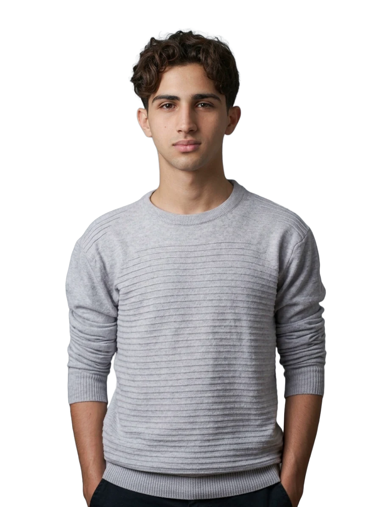

Aktham Abel
Cofundador · CEO
Nacido en Venezuela, es la persona que lleva a Bytes a nuevas ligas. Con su liderazgo, busca llevar los productos y la arquitectura de la empresa a los más altos estándares, en beneficio de nuestros clientes y de la sociedad.
- Responsabile
- Lider
- Inteligente